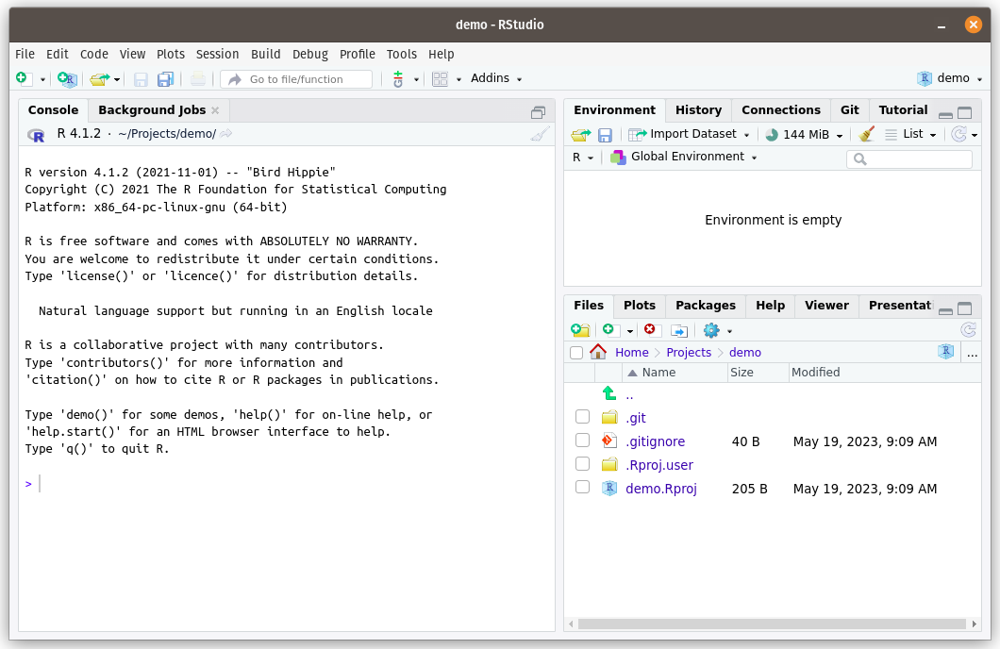

Warning
This chapter is a draft, and may be updated soon.
This chapter is a draft, and may be updated soon.
In this book we will be writing code using various tools that allow us to make programming easier and more reproducible, namely code editing software and version control software.
Programming code is typically written in plain text files (but instead of the file extension .txt they will typically use a different extension that indicates the programming language being used). Traditionally, code in the R programming language was written in R script files with the .R file extension.
Because these code files are just text, all you need to open them is a text editor, like Windows’s Notepad or Mac’s TextEdit. However, you can also use a dedicated code editing program, which will add a lot of useful features that makes writing code much easier. These editing programs are often called Interactive Development Environments, but because that is a mouthful, we usually just refer to them using their acronym: IDEs.
The most popular IDE for the R programming language is called RStudio, and there are two easy ways to use it.
Download and install the free RStudio Desktop version to your computer.
Use the online Posit Cloud1 version through a web browser (no installation required, but only free for a certain number of hours each month2).
These two versions are functionally equivalent, so the only things you really have to decide is how averse you are to paying money and whether you can install software on the computer you are using.
| Don’t want to pay | Can pay if necessary | |
|---|---|---|
| Can install software | Install RStudio Desktop. | Either works.3 |
| Can’t install software | Use Posit Cloud online, and don’t exceed the monthly free quota. | Use Posit Cloud. |
Later in this chapter I will give instructions for getting each of these options up and running.
There are also other IDEs that you can use to write R code. A popular general IDE is VS Code, which can be used to write in any different programming language. The downside is that it lacks a lot of R specific features that you can find in RStudio. However, instructions to get set-up with VS Code are provided in an Appendix: Section B.3.
Most programming is not actually that difficult, once you learn how to think like a computer. The hard part of programming is writing large complicated programs with other programmers.
One of the reasons this is challenging is because we need a way to collaboratively edit the same set of files that contain our code.
This is not just a problem for programmers - if you and a friend were writing a report together in Microsoft Word, you might find yourself emailing the Word document back-and-forth. In fact, Microsoft Word has helpful a feature called Track Changes that allows you to see who has edited different parts of a file.
Unfortunately, you can’t edit the file while your friend is, otherwise you will end up with different versions of the document, and the only way to recombine them will be to compare them side-by-side and manually copy over any differences.
In these modern times, you could instead use an online collaborative program like Google Docs - but while that is fine for text, programs need to be run, and that usually needs you and your friend to be working on separate computers so that your versions of the code don’t interfere with each other when running.
Software engineers have come up with solutions to these problems, which they call version control (because it enables you to control the version of the program that you are running). The dominant version control software used today is called Git, and it is so popular that IDE’s like RStudio automatically include integrations to work with it.
We will talk more about how Git works in Chapter 12 but for now you can think of it as like the save points in a video game. When you reach a significant point (like adding an important software feature, or defeating a boss in a video game) you can save your progress at that point. This allows you rewind your progress back to that point if you make a mistake in the future.
Git can also figure out how to automatically combine different versions of a project (i.e. your version and your friend’s version), and it will keep track of all the changes you record in a save point as well as who made them.
We can also use websites like GitHub.com to share projects that are managed with Git. This is useful for a number of reasons, but from a reproducibility perspective it allows other scientists to download our code and run it for themselves.
If you already have a GitHub account, then proceed to step 2.
If not, then go to https://github.com and create a free account. A few suggestions:
If you have any interest in working in tech in the future, then pick something vaguely professional as your GitHub username. You don’t want to have to explain to a future employer why your GitHub username is squeaky_boi. Think of your GitHub profile as the the programming equivalent of your LinkedIn profile.
GitHub will ask if you want to upgrade to a fancy paid account when you register, but you should stick with the free account which has everything we need.
GitHub will also ask you a bunch of questions when you sign up about what you want to use it for. It really doesn’t matter what you respond to these questions, so feel free to skip through them.
If you are installing RStudio Desktop on your computer, then you should follow these steps:
First, you should first install Git by following the appropriate installation instructions for your operating system on the Git website: https://git-scm.com/downloads
(Note that Git is almost certainly already installed if you are using Linux.)
Next you should install R by going to the appropriate page for your operating system:
Windows:
Download and install R from the .exe installer on this page: https://cran.rstudio.com/bin/windows/base/
Then also install RTools from this page (make sure the version number of RTools matches the version number of R that you just installed, e.g. if you installed R v4.2.3 then you will need to install RTools v4.2 [i.e. the same first two digits]): https://cran.rstudio.com/bin/windows/Rtools/
Mac: download and install R from the appropriate .pkg installer for your version of macOS on this page: https://cran.rstudio.com/bin/macosx/
Linux: follow the instructions for your flavor of Linux: https://cran.rstudio.com/
Finally we are can install RStudio Desktop. Download the installer for your operating system here and then install from it: https://posit.co/download/rstudio-desktop/
Note that RStudio Desktop is free, but Posit (the company that created RStudio) also offers several paid versions, so make sure you get the free RStudio Desktop version.
After you have installed RStudio, you should be able to start the program, which should look like this:
Next we need to install a program called (pronounced “lay-tek” - this will turn our files containing R code into nicely formatted PDFs).
To do this, open RStudio. There should be a pane on the left called “Console”. In this Console, copy and paste the following two lines and hit enter to run them:
install.packages("tinytex")
tinytex::install_tinytex()Once you have done this, proceed to Section 2.5 to connect GitHub to RStudio.
Got to https://posit.cloud/ and create an account. You can sign up for the free plan, which at the time of writing includes 25 hours of online RStudio access per month before they ask you to pay.
To connect your GitHub account, click on your profile name/icon in the top right of the posit.cloud homepage, and then on the Authentication page.
Find the line on this page where it says GitHub, and slowly click any unchecked checkboxes (wait a couple of seconds between each checkbox in case a prompt appears).
Some of the checkboxes may open up new webpages taking you to GitHub, which will ask you to verify that you want to authorize Posit to access your GitHub account. Make sure you agree all of these, otherwise you might not be able to edit code on GitHub.
First, go to RStudio (or launch a new empty RStudio project if you are using the online RStudio at posit.cloud) and open the tab in the left hand pane called Terminal. If you do not see a Terminal tab, then you can create one from the top menu of RStudio Desktop by going to “Tools > Terminal > New Terminal”.
In this terminal, set your GitHub username by running this line, making sure to replace your name inside the quotation marks:
git config --global user.name "Your Name Here"Then run this commend, again making sure to replace the email inside the quotation marks with the same email you used to sign up for GitHub:
git config --global user.email "you@emailHost.com"I would also recommend running one final line in the Terminal (this will enable your computer to store your GitHub login details - otherwise you will be typing them in a lot).
git config --global credential.helper storeThen go to the Console tab (which should be next to the Terminal), and copy and paste these lines of R code one at a time:
install.packages(c("usethis","gitcreds"))then this line (which will open a GitHub web page - see below for what to fill in)
usethis::create_github_token()On the token webpage that appears, make sure that you are creating a “Classic token”, and not a “Fine-grained” token. Then you will need to set the following options:
In the Note field, write something that indicates where this token will be used, e.g. RStudio.
For the expiration date, pick a date about in the future after which you will no longer need the token. E.g. if you are following these instructions for a class, pick a date after the end of the semester.
You should not select no expiration date - that is a security risk.
You can leave all the checked scopes as the defaults (you need the first set of repo scopes), and then scroll down to the green Generate token button at the bottom of the webpage and click it.
The next page that appears will display a token, a random series of letters and numbers that is basically a temporary password that you can use to authorize a restricted set of activities on your GitHub account (without having to share your master password with RStudio). You will never see this token again after you leave this page, so don’t close the webpage until you have finished this section, or you will have to create an entirely new token.
Return to the Console tab in RStudio, and run this line:
gitcreds::gitcreds_set()At the prompt, copy and paste the token from GitHub and click enter.
(If you ever need to replace the token, just run gitcreds::gitcreds_set() in the RStudio Console again.)
Formerly known as RStudio Cloud.↩︎
At the time of writing, you get 25 hours per month for free, after which you have to pay.↩︎
Bear in mind that RStudio Cloud can only be used if you are connected to the internet, so if you want to work somewhere without internet then you will need to install RStudio Desktop. Also, RStudio Desktop will ultimately provide you with more flexibility.↩︎